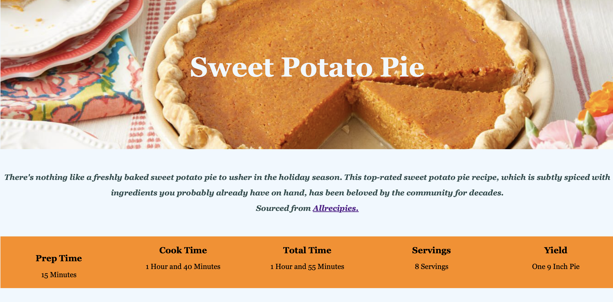
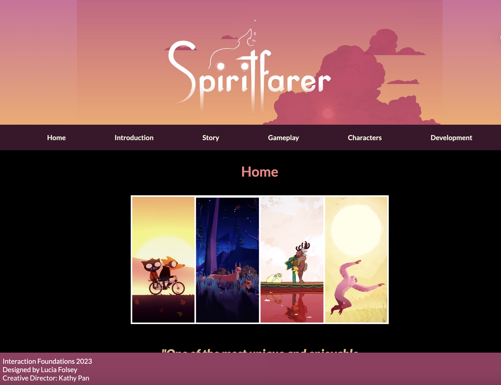
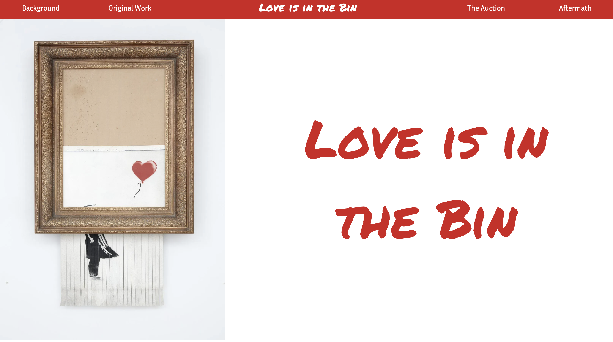

Recipe Page
Learn how to make one of the most delicious treats of the fall by following this Sweet Potato Pie recipe.
Spiritfarer Microsite
Designed by Lucia Folsey and Creative Directed by Kathy Pan, this site explores the popular videogame Spiritfarer.
Banksy Microsite
An informative website designed by Hannah Peaslee and Creative Directed by Lucia Folsey. We look closer into the infamous work entitled Love is in the Bin.